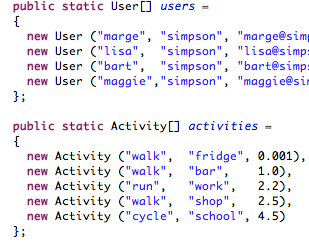
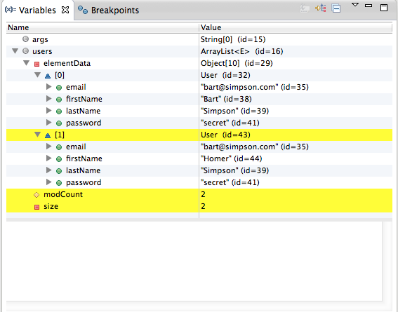

TDD Introduction
Test Driven Development


Test Driven Development has been among the most influential approaches in recent software engineering history. Here we look at its origins, principles and some of the important benefits of the approach.
First Tests

The essential elements of TDD are fairly easy to grasp. The support libraries (xUnit) are relatively straightforward, and we can expect our IDE to provide direct assistance to using these libraries. Here we look at the facilities Eclipse provides to the JUnit library.
Annotations

Earlier JUnit libraries relied on Inheritance and specific design patterns to integrate the unit tests into runnable test suites. Modern JUnit relies on Java Annotations - which simplify test structure and enable more flexible structuring of tests classes.
Collections

All programming languages will have support for a range of common data structures. Unlike typical dynamic programming language, collections are implemented as a standard library in Java (as opposed to being built in). We will survey the major features of this library, focusing on the principle interfaces and implementations. There is considerable more to collections, which should be investigated independently.
Pragmatic Testing

One way of becoming familiar with TDD is to explore some simple examples of various strategies that might be employed in some simple examples. Here we look at useful examples from the Pragmatic series - which laid out much of the early exploration of TDD.
Pacemaker with First Tests

We revise the initial pacemaker lab to use collections and a simple API
Pacemaker with Fixtures + Tests

We try to apply some of these practices to the Pacemaker app we are building the labs. In general many of the tests are straightforward but we strive to make elegant use of fixtures.
Writing Tests

A review of the basic structure of JUnit based tests, elaborating on the primary assert calls and annotations.
Right BICEP
Guidelines for Composing Tests phrased using the acronym: - Right, Boundary, Inverse, Cross-check, Errors & Performance.
C.O.R.R.E.C.T

More guidelines - this time the acronym is Conformance, Ordering, Range, Reference, Existing, Cardinality, Time.
Assignment Tests

Guidelines on some of the tests you may write as part of your assignment
Streams

At the heart of the JDK are object I/O and Serialization capabilities, packaged into a comprehensive library for managing the life cycle of simple objects. Although the approach taken by this particular base library has to some extent been superseded by other approaches, it remains an important and influential technical approach, that can be usefully applied in simpler standalone applications.
TDD-01

The objective of this lab set up a simple command line app to be used as a foundation for exploring TDD in subsequent labs
TDD-02

Evolve the application developed in lab01 with additional capabilities
TDD-03

Expand the pacemaker model to include Location and Activity classes. Introduce a set of tests to verify the behavior of the model.
TDD-04

Extend the pacemaker application to incorporate a serialization mechanism to enable users & activities to be persisted to a file. We will then try to generalize this mechanism, which will enable us to experiment with alternative serialization formats.
Lab-08
Extend the pacemaker project to include tests for the persistence mechanisms.